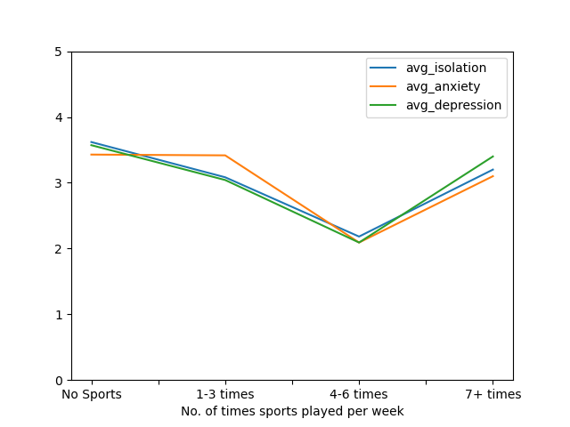

A study on mental health [by who] found that as of 2021, more than 60% of students met the criteria for one or more mental health problems, an increase of 50% from 2013 (cite source). {explain care about mental health} This analysis aims to see how other factors outside of {whatever you call gender and race and stuff} impact student mental health. Are students engaging in sports less likely to feel depressed? Do students living on campus feel less isolated? How does academic year affect anxiety? These are the types of questions this analysis seeks to answer.
The dataset used for this analysis was a dataset titled “Student Mental Health Survey” sourced from Kaggle. The data was “gathered via electronic surveys distributed to IT students” and includes multiple measurements of mental health and wellness. Features with a potential impact on mental health include gender, age, university, type of degree, major, GPA, residential status, campus discrimination, engagement with sports, average sleep, and stress relief activities. Minimal pre-processing was required. The dataset described itself as cleaned, and a review confirmed that there were no anomalies or missing information in the data.
One interesting correlation was between the average number of times students engaged with sports per week and their reported anxiety, depression, and isolation.
Isolation and depression decrease both in the increase from no sports engagement to one to three instances of sports engagement per week and from one to three instances of sports engagement per week to four to six instances of sports engagement per week, while anxiety remains steady between no sports engagement and one to three instances of sports engagement per week, decreasing at four to six instances of sports engagement per week. This would suggest that the more often a student engages in sports, the less depressed, anxious, and isolated they would feel.
The increase in reported depression, anxiety, and isolation at seven or more times engaging with sports per week from four to six times engaging with sports per week suggests more to the relationship between sports and mental health. One possible explanation for this could be that students engaging in sports seven or more times per week are more likely to be students specifically involved in competitive college athletics. These students may experience more stress related to their athletic activities in comparison to students participating in club or intramural sports who may participate for fun or health instead of a scholarship or potential career.